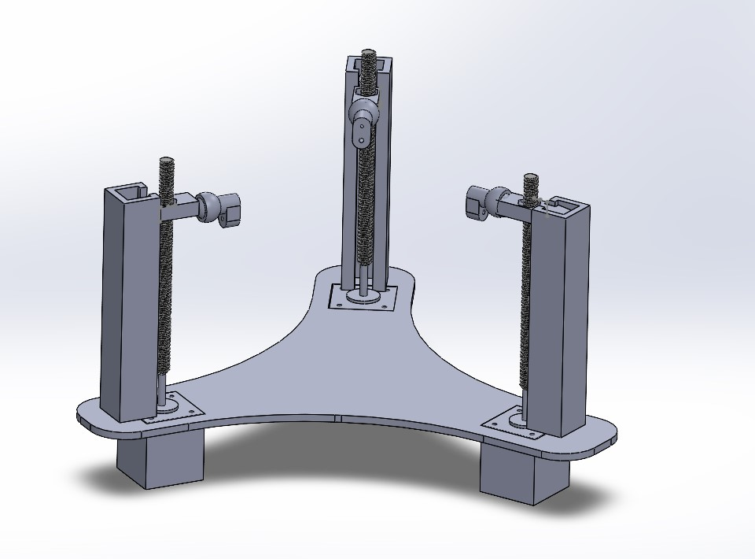
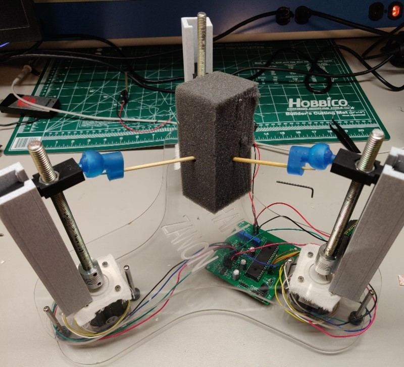
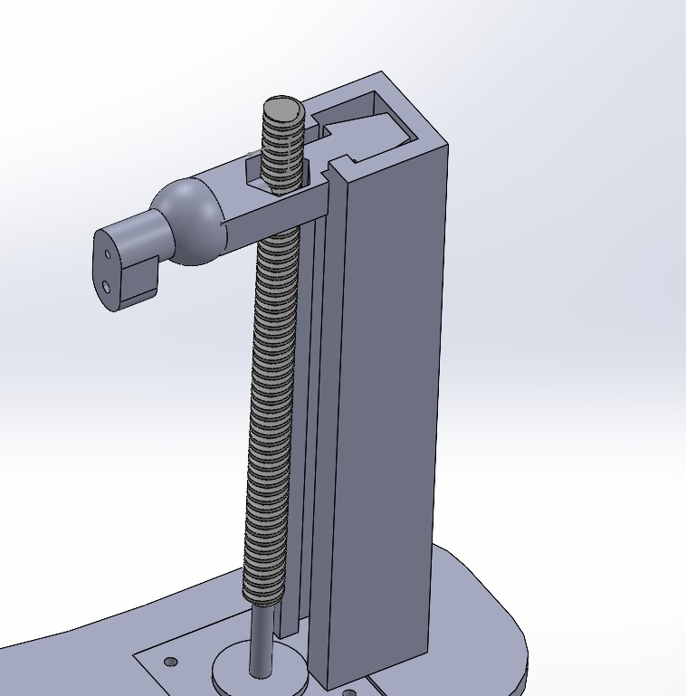
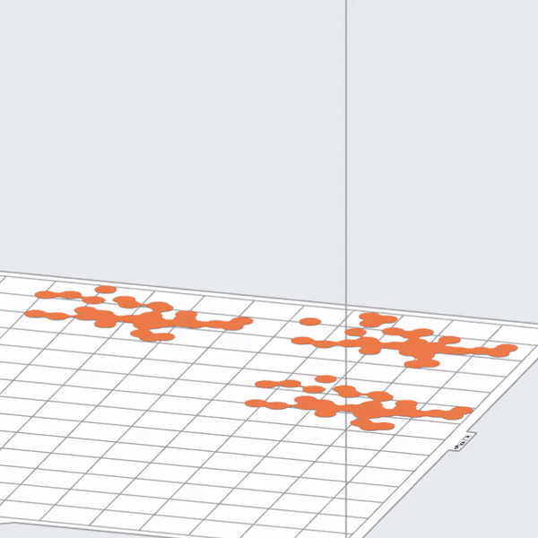
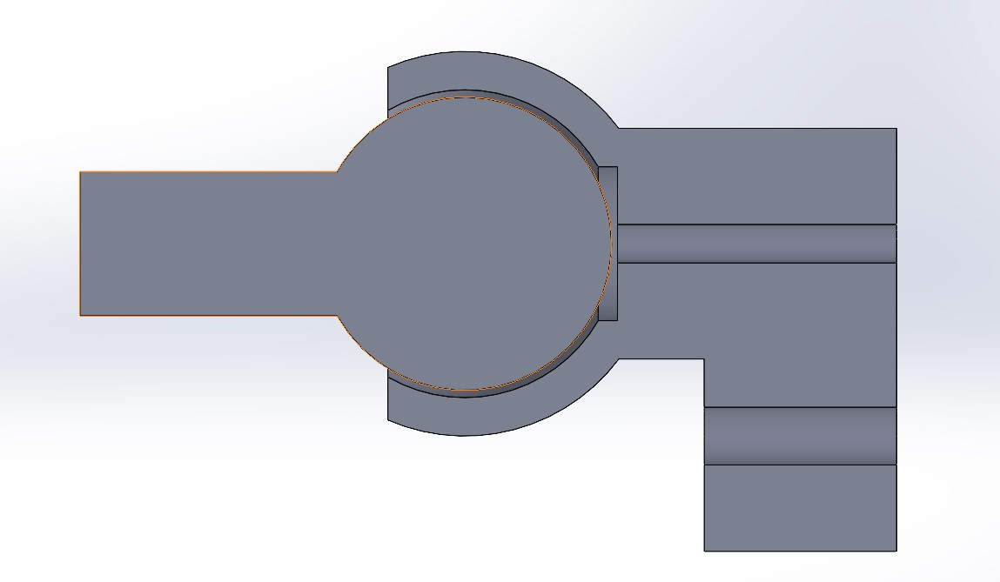
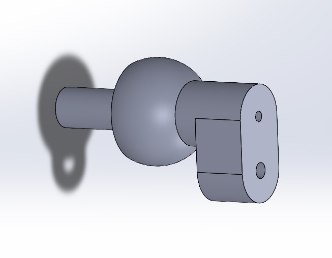
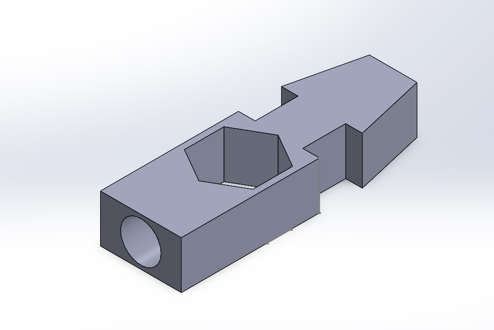

Stewart Gough Platforms, or simply "Motion Platforms", are typically platforms with 6 actuators (legs), that are fixed to hinges on a platform at 3 points. These actuators push and pull the platform, allowing it to rotate in various different directions. My project took out half of the legs and settled on 3. Instead of rotating a platform, my project uses pins to angle an object in the middle.  This process was inspired by an orthopedic surgery Robot by Robossis, a biomedical engineering company that created the first and only surgical robot for long bone fracture realignments. I had the pleasure of working with them during the Fall of 2021, through Rowan University's undergraduate Clinic program.      